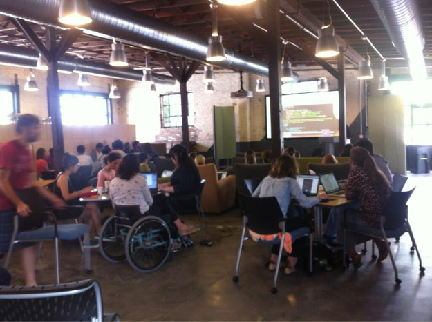
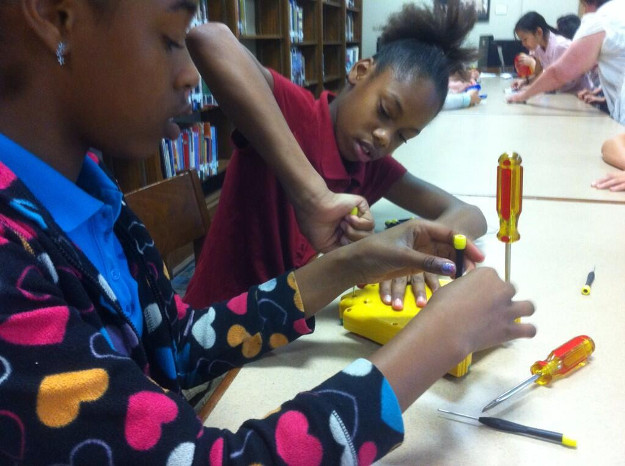
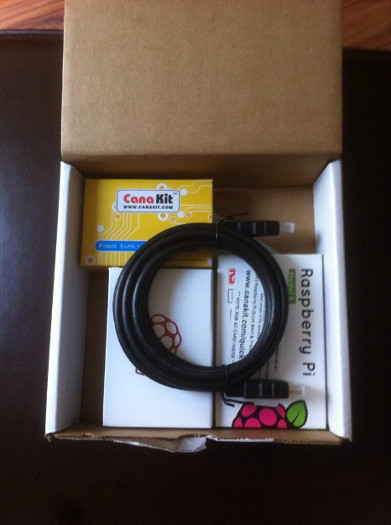
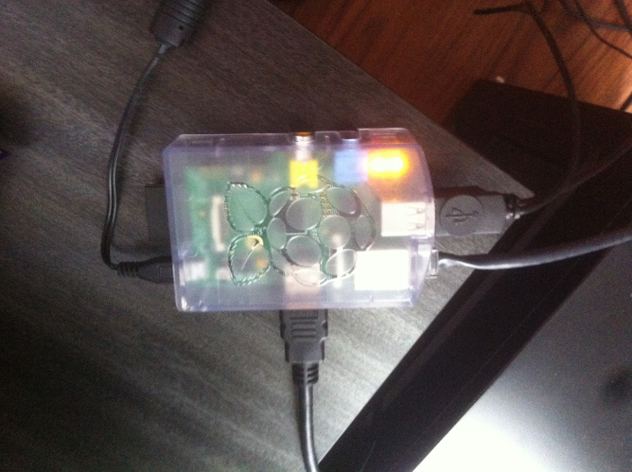
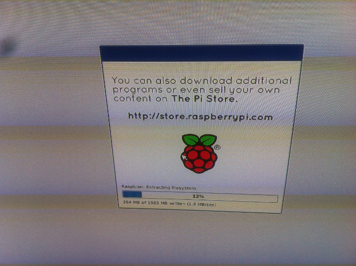

Created by Amber Adams / @amberadams
Presentation at http://www.amberadams.co/minecraft-talk



Canakit: Pi, power cord, case, HMDI cable, SD card w/NOOBS

plugin HDMI, mouse, keyboard, ethernet, THEN power

select Raspbian, Install, Confirm
dance break as it loads
sudo rebootstartxifconfigping 8.8.8.8Using Putty or Terminal,
ssh pi@10.0.1.25sudo apt-get update && sudo apt-get install oracle-java7-jdkjava -versionor more specifically, Spigot
sudo wget http://ci.md-5.net/job/Spigot/lastSuccessfulBuild/artifact/Spigot-Server/target/spigot.jar
sudo java -Xms256M -Xmx496M -jar spigot.jarloading libraries, please wait
mushrooms, pumpkins, zombies
preparing spawn area
stopsudo nano server.propertiesop [your minecraft nickname]cd /home/pi/pluginssudo wget http://dev.bukkit.org/media/files/586/974/NoSpawnChunks.jarcd /home/pi/pluginssudo wget http://dev.bukkit.org/media/files/791/600/Clearlag.jarplugins